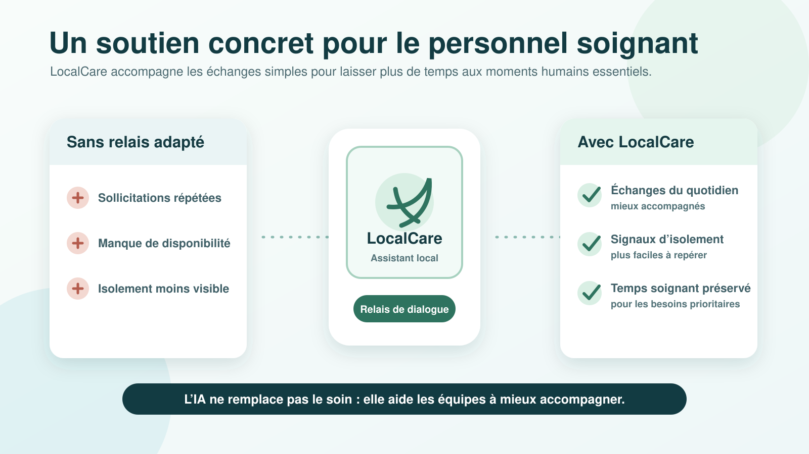

1
Écouter et dialoguer
Causette propose une conversation simple, calme et adaptée à des personnes âgées pouvant ressentir de la solitude.
Assistant conversationnel local pour EHPAD
Causette est un assistant conversationnel entièrement local, pensé pour accompagner les personnes âgées isolées et aider le personnel soignant dans les échanges simples du quotidien.
Le projet ne cherche pas à remplacer la relation humaine. Il propose un relais de dialogue, disponible à tout moment, pour renforcer l’écoute et soutenir l’organisation des soins.
Causette propose une conversation simple, calme et adaptée à des personnes âgées pouvant ressentir de la solitude.
L’assistant prend en charge certains échanges non médicaux afin de préserver le temps soignant pour les situations prioritaires.
Le modèle fonctionne localement pour limiter l’exposition des conversations et des informations personnelles sensibles.
En établissement, une partie des demandes correspond à un besoin de présence, d’échange ou de réassurance. Causette apporte un premier niveau d’accompagnement conversationnel, sans se substituer aux professionnels.

Causette s’inscrit entre la personne âgée, les proches, les aidants et l’établissement. Sa valeur vient de sa capacité à renforcer la présence autour de la personne, sans effacer le rôle des soignants.
Les demandes conversationnelles simples peuvent être accompagnées par l’assistant.
Les équipes gardent plus de temps pour les gestes de soin et l’accompagnement prioritaire.
Les limites du système sont clairement définies et communiquées aux utilisateurs.

Les échanges avec une personne âgée peuvent contenir des informations personnelles, intimes ou sensibles. Causette privilégie donc une exécution locale du modèle afin de réduire les risques liés au transfert de données vers des services externes.
Cette architecture rend la solution plus adaptée aux EHPAD, maisons de retraite et contextes familiaux où la confidentialité est un critère central d’acceptation.
Le fonctionnement local limite la dépendance à Internet et aux plateformes externes.
Les informations restent dans l’environnement de l’établissement ou du domicile.
Pour être crédible dans un contexte sensible, Causette doit assumer ses limites et rester un outil d’aide, jamais un remplacement du soin.